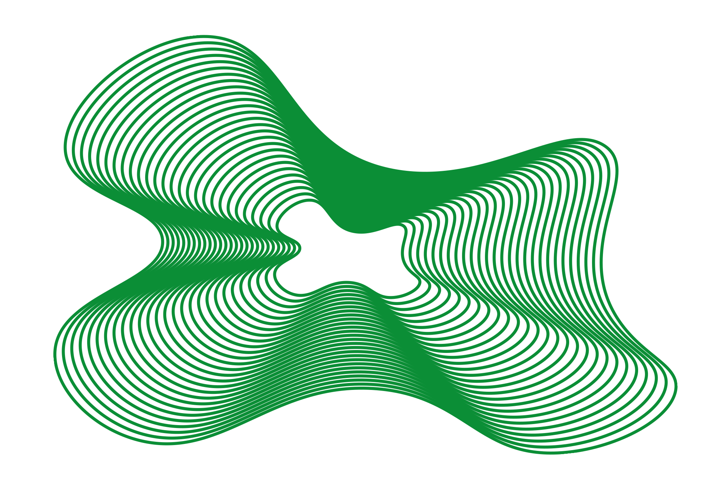

d.12/8-23
SY DIN EGEN MULEPOSE
Muleposer er ikke kun praktiske, men de kan også være et stilfuldt tilbehør og et bæredygtigt alternativ til plastikposer. Hvis du overvejer at skabe din egen mulepose, er du kommet til det rigtige sted. Denne artikel vil guide dig gennem processen og give dig inspiration til dit muleposedesign.

NYBEGYNDER GUIDE
HVORFOR GENBRUG?


